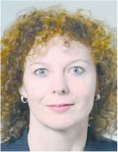
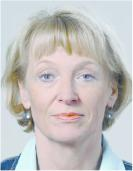
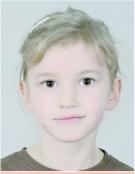

Musterfoto Qualitativ hochwertige Fotos sind die Grundlage einer einwandfreien Wiedergabe des Bildes und Voraussetzung für die Anwendung der Gesichtsbiometrie in Pässen. Dieser Foto-Mustertafel sind die Qualitätsmerkmale zu entnehmen, die die Eignung der Fotos für den vorgesehenen Einsatz in Pässen gewährleisten. Es ist dringend erforderlich, die hier beschriebenen Anforderungen zu beachten, da sonst eine biometrische Erkennung des Antragstellers sowie die einwandfreie Wiedergabe des Bildes im Dokument nicht gewährleistet sind. Der Passbewerber ist grundsätzlich ohne Kopfbedeckung abzubilden. Die Passbehörde kann vom Gebot der fehlenden Kopfbedeckung insbesondere aus religiösen Gründen, von den übrigen Anforderungen aus medizinischen Gründen, die nicht nur vorübergehender Art sind, Ausnahmen zulassen. Auf den Fotos sind keine Uniformteile abzubilden. |  |
Format Das Foto muss die Gesichtszüge der Person von der Kinnspitze bis zum oberen Kopfende, sowie die linke und rechte Gesichtshälfte deutlich zeigen. Die Gesichtshöhe muss 70 - 80 % des Fotos einnehmen. Dies entspricht einer Höhe von 32 - 36 mm von der Kinnspitze bis zum oberen Kopfende. Dabei ist das obere Kopfende unter Vernachlässigung der Frisur anzunehmen. Wegen des häufig nicht eindeutig zu bestimmenden oberen Kopfendes sind Passfotos jedoch erst dann abzulehnen, wenn die Gesichtshöhe 27 mm unterschreitet oder 40 mm überschreitet. Bei volumenreichem Haar sollte darauf geachtet werden, dass der Kopf (einschl. Frisur) möglichst vollständig abgebildet ist, ohne aber die Gesichtsgröße zu verkleinern. Das Gesicht muss zentriert auf dem Foto platziert sein. |  |
Schärfe und Kontrast Das Gesicht muss in allen Bereichen scharf abgebildet, kontrastreich und klar sein. | |
Ausleuchtung Das Gesicht muss gleichmäßig ausgeleuchtet werden. Reflexionen oder Schatten im Gesicht sowie rote Augen sind zu vermeiden. | |
Hintergrund Der Hintergrund muss einfarbig hell sein (idealerweise neutral grau) und einen Kontrast zum Gesicht und zu den Haaren aufweisen. Bei hellen Haaren eignet sich ein mittelgrauer Hintergrund, bei dunklen Haaren ein hellgrauer. Der Hintergrund darf kein Muster aufweisen. Das Foto darf ausschließlich die zu fotografierende Person zeigen (keine weiteren Personen oder Gegenstände im Bild). Auf dem Hintergrund dürfen keine Schatten entstehen. |  |
Fotoqualität Das Foto sollte mit einer Auflösung von mindestens 600 dpi vorliegen. Das Foto muss farbneutral sein und die Hauttöne natürlich wiedergeben. Digitale Fotos sind grundsätzlich in Farbe vorzulegen. Ist die Vorlage eines papierbasierten Fotos in Ausnahmefällen gestattet, darf dieses Foto in Farbe oder Schwarzweiß vorgelegt werden; es darf keine Knicke oder Verunreinigung aufweisen. | |
Kopfposition und Gesichtsausdruck Eine Darstellung der Person mit geneigtem oder gedrehtem Kopf (z. B. Halbprofil) ist nicht zulässig. Die Person muss mit neutralem Gesichtsausdruck und geschlossenem Mund gerade in die Kamera blicken. | |
Augen und Blickrichtung Die Person muss auf dem Foto direkt in die Kamera blicken. Die Augen müssen geöffnet und deutlich sichtbar sein und dürfen nicht durch Haare oder Brillengestelle verdeckt werden. |  |
Brillenträger Die Augen müssen klar und deutlich erkennbar sein (Reflexionen auf den Brillengläsern, getönte Gläser oder Sonnenbrillen sind nicht zulässig). Der Rand der Gläser oder das Gestell dürfen nicht die Augen verdecken. |  |
Kopfbedeckung Kopfbedeckungen sind grundsätzlich nicht erlaubt. Ausnahmen sind insbesondere aus religiösen Gründen zulässig. In diesem Fall gilt: das Gesicht muss von der unteren Kinnkante bis zur Stirn erkennbar sein. Es dürfen keine Schatten auf dem Gesicht entstehen. |  |
Kinder Bei Kindern bis zum vollendeten 10. Lebensjahr sind folgende Abweichungen bei der Gesichtshöhe und im Augenbereich zulässig: Die Gesichtshöhe bei Kindern muss 50 - 80 % des Fotos einnehmen. Dies entspricht einer Höhe von 22 - 36 mm von der Kinnspitze bis zum oberen Kopfende. Dabei ist das obere Kopfende unter Vernachlässigung der Frisur anzunehmen. Wegen des häufig nicht eindeutig zu bestimmenden oberen Kopfendes sind Passfotos jedoch erst dann abzulehnen, wenn die Gesichtshöhe 17 mm unterschreitet oder 40 mm überschreitet. Bei Säuglingen und Kleinkindern gelten zusätzlich die nachfolgend beschriebenen Abweichungen. |  |
Säuglinge und Kleinkinder Bei Säuglingen und Kleinkindern bis zum vollendeten 6. Lebensjahr sind zusätzlich zu den unter der Überschrift „Kinder“ dargestellten Ausnahmen Abweichungen in der Kopfhaltung (nicht von der Frontalaufnahme!), im Gesichtsausdruck, hinsichtlich Augen und Blickrichtung sowie hinsichtlich der Zentrierung auf dem Foto zulässig. |  |